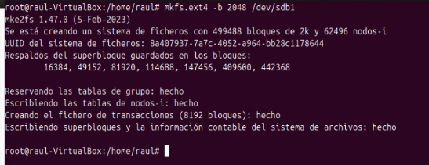
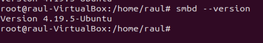
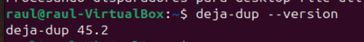

Gestió de la Informació del Sistema i Administració
1. Configuració inicial
Primer de tot, s'ha d'instal·lar Ubuntu Linux en una màquina virtual. Per fer la instal·lació, s'ha d'anar a la pàgina oficial d'Ubuntu per descarregar l'arxiu .ISO. Aquest fitxer conté la imatge necessària per poder instal·lar Ubuntu en la màquina virtual.
Descarregar Ubuntu
Per descarregar Ubuntu, clica l'enllaç i espera que es faci la descàrrega automàtica de Ubuntu Desktop 24.04.1 LTS.

Un cop finalitzada la descàrrega, tindràs el fitxer .ISO llest per ser utilitzat.
Crear la màquina virtual amb VirtualBox
Després de la descàrrega, cal obrir un programa per crear màquines virtuals. En aquest cas, s'utilitzarà VirtualBox.

Aquesta eina ens permetrà crear i gestionar la màquina virtual en què instal·larem Ubuntu. Un cop instal·lat VirtualBox al teu ordinador, pots començar a crear la màquina virtual seguint els passos necessaris.
Afegir i configurar la màquina
En aquest apartat es començarà amb la creació d'una màquina virtual utilitzant l'arxiu .ISO descarregat en l'apartat anterior. També es farà la configuració de l'entorn necessari per posar la màquina en funcionament.
Passos a seguir:
- Obrim VirtualBox i busquem a la part superior el botó "Nova" per començar el procés de creació de la màquina virtual.
- En la finestra següent, cal posar el nom de la màquina virtual. A la secció "ISO image", seleccionarem ISO descarregat al principi de l'article per configurar la imatge d'instal·lació de la màquina virtual. Un cop seleccionat el fitxer, fem clic a Endavant per continuar.

- A continuació, cal introduir un nom d'usuari i una contrasenya que compleixi els requisits mínims de seguretat. Aquesta informació serà necessària per accedir al sistema operatiu un cop estigui instal·lat.
- Ara s'ha de configurar la quantitat de memòria RAM que es vol assignar a la màquina virtual. També cal especificar la quantitat de processos de la CPU que es volen utilitzar. Finalment, cal determinar la mida del disc dur virtual per emmagatzemar els fitxers del sistema operatiu i altres dades.

Crear i gestionar comptes d'usuari locals
Passarem a veure la creació d'usuaris locals. Per crear-lo s'utilitzarà la comanda adduser:
Introduïm una S o premem enter per seguir amb la creació:
2. Processos
Els processos en Linux poden ser de dos tipus: en primer pla o en segon pla. Els processos en primer pla interactuen amb l'usuari i bloquegen la terminal fins que finalitzen, mentre que els processos en segon pla poden continuar executant-se mentre l'usuari segueix utilitzant la terminal. A més, els processos poden tenir una prioritat alta o baixa, depenent de la seva importància o de la configuració del sistema.
Els processos poden estar en diversos estats:
- Running: El procés s'està executant.
- Sleeping: El procés està inactiu, esperant una acció externa.
- Stopped: El procés està aturat.
- Zombie: El procés ha acabat, però encara apareix a la taula de processos perquè el procés pare no ha llegit el seu estat de sortida.
Comandes bàsiques per gestionar els processos
A continuació, es mostren algunes de les comandes més utilitzades per gestionar els processos en Linux:
- ps: Mostra una llista de processos en execució. Per exemple, amb
ps auxes mostra una llista completa de tots els processos en execució amb informació detallada.
- top: Mostra informació en temps real sobre els processos i l'ús de recursos del sistema. Aquesta comanda mostra els processos més pesats en termes d'ús de recursos.
- kill: Permet enviar una senyal a un procés, habitualment per aturar-lo. Per obtenir el PID (Process ID) del procés que vols aturar, primer pots utilitzar la comanda
top. Un cop obtingut el PID, pots utilitzarkill PIDper aturar el procés.
Per exemple, si utilitzem el PID = 2463, podem matar el procés amb la comanda següent, la qual tancarà el terminal del sistema.
-
bg i fg: Aquests comandaments permeten moure un procés entre el primer pla i el segon pla.
-
Per fer una prova, crearem un procés d'espera de 1000 segons:
-
Seguidament, utilitzarem
CTRL + Zper aturar-lo, però sense matar el procés:
-
La comanda
bgenvia un procés aturat al segon pla. Llavors, utilitzembg sleepper passar el procés al segon pla:

-
La comanda
fgporta un procés del segon pla al primer pla. Per exemple, utilitzemfgper passar el procés creat abans al primer pla:
-
-
pstree: Mostra els processos en forma d'arbre, mostrant les relacions entre processos. Per veure-ho, utilitzem la comanda
pstreeal terminal:

3. Instal·lació de Serveis Essencials
Abans d'instal·lar qualsevol servei, és recomanable assegurar-se que el sistema estigui actualitzat. Per això, es farà ús de la comanda sudo apt update:

Després, es realitza la comanda sudo apt upgrade:

Gestió de Serveis
Un cop instal·lats els serveis, es poden gestionar amb la comanda systemctl. Aquesta comanda permet iniciar, parar o reiniciar serveis. A continuació es mostra un exemple d'aquesta comanda amb el servei SSH:

També podem editar el fitxer de configuració de SSH, obrint-lo amb la comanda sudo nano /etc/ssh/sshd_config per fer els següents canvis:
- Desactivar l'accés del root amb
PermitRootLogin no:

- Permetre l'accés per contrasenya amb
PasswordAuthentication yes:

Comprovar Processos en Execució
Per veure els processos en execució, podem utilitzar comandes com top, que ens mostra els processos en temps real, o podem obtenir una instantània dels processos amb ps aux, com es veu a la captura:
També podem cercar i filtrar un procés específic amb la comanda grep:

Una comanda més útil que les anteriors és htop, que mostra tots els processos en execució en temps real, el seu ús de CPU i memòria. La instal·larem amb sudo apt install htop i la podrem executar:
Optimitzar l'Ús de Recursos
Per comprovar l'ús de la memòria i la CPU en temps real, podem utilitzar la comanda vmstat 1:

Per optimitzar l'espai quan l'equip utilitza un disc SSD, podem fer servir la comanda sudo fstrim -v. I per mantenir el sistema optimitzat, és recomanable mantenir-lo actualitzat.
- Actualitzar amb
sudo apt update && sudo apt upgrade:
Administrar Serveis Actius Segons les Necessitats del Sistema
Per identificar els serveis actius, utilitzarem la comanda systemctl:

S'ha de revisar quins serveis s'estan executant i determinar si són necessaris.
-
Per aturar serveis innecessaris, utilitzarem la comanda
sudo systemctl stop nom_del_servei. -
Si un servei no és necessari a l'inici del sistema, és millor deshabilitar-lo amb
sudo systemctl disable nom_del_servei. -
Si es necessita un servei per a una tasca específica, es pot habilitar temporalment amb la comanda
sudo systemctl enable nom_del_servei, de manera que s'iniciarà automàticament a l'arrencada.
4. Usuaris i Grups
- Per revisar la llista d'usuaris creats al sistema, anirem al fitxer
/etc/passwd:

- Per eliminar un usuari de qualsevol grup, podem utilitzar la comanda
deluser nom_usuari nom_grup:

- Per crear un grup, utilitzarem la comanda
sudo groupadd nom_grup, i després comprovarem aquest grup amb la comandagetent group | grep nom_grup:

- Per afegir un usuari a un grup creat o existent, utilitzarem la comanda
sudo usermod -aG nom_grup nom_usuari. Aquesta comanda no retorna cap missatge. Després, farem una comprovació dels grups als quals pertany l'usuari ambgroups nom_usuari:

- També podem crear un usuari dins d'un grup amb la comanda
adduser nom_usuari nom_grup. Després, comprovarem que al grupsudotenim dos usuaris:
La primera part de la línia és el nom del grup, seguida d'una "X" que indica que no s'utilitza contrasenya per al grup. Després ve l'identificador del grup i una llista d'usuaris membres del grup.
- Per canviar la contrasenya d'un usuari, utilitzarem la comanda
passwd nom_usuari. Ens demanarà una nova contrasenya, mantenint la privacitat de les dades de l'usuari:
- Al fitxer
/etc/passwd, podem trobar informació bàsica sobre els comptes d'usuari, com el nom de l'usuari, l'identificador únic d'usuari (UID), i el directori personal de l'usuari:

- Al fitxer
/etc/shadowes guarden les contrasenyes encriptades de cada usuari. La línia de cada usuari conté informació sobre quan es va canviar la contrasenya per última vegada, els dies d'espera per canviar la contrasenya, i altres paràmetres de seguretat:

- Per crear un sistema personal d'arxius per a un usuari, utilitzarem la comanda
mkdir nom_usuari/carpeta. Però, per defecte, el directori serà propietat de l'usuariroot. Per canviar el propietari i el grup, utilitzarem la comandachown nom_usuari:nom_grup directori:
- Per bloquejar un usuari, utilitzarem la comanda
usermod -L nom_usuari. A l'arxiu/etc/shadow, l'usuari apareixerà amb un!, indicant que el compte està bloquejat. Per desbloquejar-lo, utilitzaremusermod -U nom_usuari:

- Per eliminar un usuari, utilitzarem la comanda
deluser nom_usuari, però aquesta comanda no eliminarà el directori personal de l'usuari. Si volem eliminar tot, inclòs el directori personal, utilitzaremuserdel -r nom_usuari:
- Per canviar el nom d'usuari, utilitzarem la comanda
usermod -l nom_nou nom_usuari. Aquesta comanda no canvia el nom del directori personal. Per això, haurem de fer servirmv directori_antic/ directori_nou/:

Però encara caldrà actualitzar el grup al qual pertany l'usuari. Per canviar el nom del grup, utilitzarem la comanda groupmod -n nom_nou nom_grup:

Finalment, el nom de l'usuari i el grup hauran estat canviats correctament.
Definir polítiques de seguretat per a contrasenyes i accessos
Per gestionar les polítiques de contrasenyes, hem de modificar el fitxer /etc/login.defs:
- Obrim el fitxer amb
sudo nano /etc/login.defs:

- Modifiquem la línia
PASS_MAX_DAYSper establir la durada màxima de la contrasenya, i altres paràmetres si cal:


- També podem configurar la qualitat de les contrasenyes, com la longitud mínima. Per fer-ho, obrim el fitxer
/etc/security/pwquality.confambsudo nano /etc/security/pwquality.conf:
Busquem la línia minlen = i establim el número mínim de caràcters per a la contrasenya:
Configuracions de l'inici de sessió
Per configurar els arxius de bash en l'inici de sessió d'un usuari, cal accedir a diversos fitxers en el directori de cada usuari. Aquests fitxers estan ocults, així que utilitzarem la comanda ls -la per veure'ls:
- El fitxer
.bash_logoutexecuta ordres quan es tanca una sessió de Bash. - El fitxer
.bashrcconfigura l'entorn cada vegada que s'obre una nova terminal de Bash. - El fitxer
.profiles'executa quan s'inicia una sessió de login, configurant l'entorn global de l'usuari.
Si volem aplicar aquestes configuracions a tots els usuaris que es creïn, hem de modificar aquests fitxers en el directori /etc/skel:
Farem les configuracions pertinents als següents fitxers
.bash_logout:
.bashrc:
.profile:
5. Permisos
Permisos normals
El primer que farem serà crear els tres usuaris següents:

Els permisos en Linux es divideixen en tres grups, que s'assignen de la següent manera:
- Propietari: Els tres primers permisos.
- Grup propietari: Els tres permisos següents.
- Altres: Els tres permisos finals.
Quan creem un arxiu, aquest començarà amb -, mentre que si es crea un directori, començarà amb d.
Permisos en arxius
- Lletres dels permisos:
- r: Lectura
- w: Escriptura (modificació)
- x: Execució
Creem un grup anomenat ddam i afegim l'usuari prova2:
A continuació, creem una carpeta a /tmp i un fitxer anomenat hola. Si revisem els permisos d'aquesta carpeta, podem veure el següent:
- Propietari: Permisos totals (lectura, escriptura i execució).
- Grup: Permisos totals (lectura, escriptura i execució).
- Altres: Només permisos de lectura i execució, sense permís d'escriptura.
Canviar grup amb chgrp
El comandament chgrp s'utilitza per canviar el grup d'un directori o fitxer. Si es fa servir amb l'opció -R, el canvi es realitza de manera recursiva, és a dir, no només sobre el fitxer o directori especificat, sinó també sobre tots els fitxers i subdirectoris dins d'ell.
Creem el directori proves i l'assignem al grup ddam:
Ara, el directori pertany al grup ddam:

Modificar permisos amb chmod
El comandament chmod s'utilitza per modificar els permisos dels fitxers i directoris. Els permisos es representen amb números:
- 7: Permisos totals (lectura, escriptura, execució).
- 5: Permisos de lectura i execució.
- 0: Sense permisos.
Exemple de com modificar els permisos d'un fitxer o directori:
També podem afegir permisos als grups de la següent manera. Per exemple, g+w afegeix el permís d'escriptura al grup propietari, i o+r afegeix el permís de lectura als "altres" usuaris:

Quan s'assignen permisos de modificació i execució, els arxius o directoris es ressalten en color verd:
Permisos especials.
Podem assignar permisos diferents a un directori o carpeta per a un usuari. Per exemple, podem configurar-los perquè cadascú pugui esborrar només els fitxers que ha creat, però no els dels altres. Per aconseguir-ho, farem servir el Sticky Bit.
Creació de la carpeta i el fitxer
-
Creem una carpeta anomenada
pelisi un fitxer anomenatscript.shdins d'aquesta carpeta:

-
Assignem permisos d'execució al fitxer
script.sh, per tal que sigui executable pels usuaris que tinguin els permisos adequats:
-
Afegim el permís setuid (u+s) a l'script. Aquest permís fa que l'script sigui executat per diversos usuaris, però amb els permisos del propietari del fitxer. Quan s'aplica aquest permís, el fitxer canviarà de color a vermell per indicar que el permís ha estat afegit:
-
El bit 4 indica que quan s'executi el fitxer, s'executarà amb els permisos del propietari i no amb els del usuari que l'està executant. Això assegura que l'script s'executi amb els privilegis necessaris per dur a terme les accions que requereix:

-
Afegim el Sticky Bit (t) a la carpeta
pelis. Aquest permís fa que tots els usuaris poden veure el contingut de la carpeta, però només podran eliminar els fitxers que han creat ells mateixos. Això evita que un usuari pugui esborrar fitxers creats per altres usuaris dins del mateix directori:

-
Creem dos fitxers dins de la carpeta
pelisi comprovem el comportament amb diferents usuaris. Cada usuari només pot veure els fitxers, però no pot eliminar els fitxers creats per altres usuaris, només els que ha creat ell mateix:

Permisos ACLs
Amb l'ordre getfacl podem veure els permisos dividits per grups i si hi ha algun permís especial aquí el podreu veure:

Prèviament hem creat l'usuari proves3 i ho hem ficat al grup ddam
i l'hi afegim permisos especials amb setfcal, sense permisos en aquest cas, que té més prioritat que el permís de l'usuari que ja tenia. Per veure'ls de nou fem servir la comanda getfacl i a la segona línia surt aquest permís especial.
Si teniu permisos especials es mostra amb el + al final dels diversos permisos.
setfacl -m user:nom_usuari:--- fixer.txt
setfacl -m group:nom_usuari:--- carpeta
setfacl -b fitxer/carpeta

Confirmem que l'usuari prova3 no té permisos de cap tipus ja que no deixa ni entrar a la carpeta:
- Restablim els permisos especials:
6. Particions
Estructura de l'informació
La estructura de l'informació es refereix a com es distribueix i s'emmagatzema la informació dins d'un sistema d'emmagatzematge, com un disc dur o una memòria. En aquest context, hem de tenir en compte dos conceptes importants: la fragmentació interna i la fragmentació externa.
Mida de sector i mida de bloc
-
Mida de sector: El sector és la unitat més petita d'emmagatzematge en un disc o sistema d'arxius. És una porció del disc on es poden llegir o escriure dades. Normalment, els sectors tenen una mida de 512 bytes, tot i que també poden ser de 4 KB en discs més moderns.
-
Mida de bloc: El bloc és una unitat d'emmagatzematge lògica utilitzada pel sistema d'arxius. Normalment, un bloc és més gran que un sector i la seva mida pot variar depenent del sistema d'arxius (per exemple, 4 KB, 8 KB, etc.). Els arxius es divideixen en blocs per al seu emmagatzematge.
Fragmentació interna
La fragmentació interna es produeix quan un arxiu petit no omple completament el bloc d'emmagatzematge assignat. Per exemple, si un bloc és de 4 KB però un arxiu només ocupa 1 KB, els 3 KB restants del bloc es queden desaprofitats, cosa que provoca un ús ineficient de l'espai.
- Solució: Per evitar la fragmentació interna, es podria fer que els blocs fossin més petits, cosa que permetria aprofitar millor l'espai. Tanmateix, fer els blocs més petits també té inconvenients, ja que podria comportar una major quantitat de blocs que cal llegir i escriure, la qual cosa podria fer que el sistema fos més lent. A més, quan es suprimeix un arxiu, els blocs buits s'han de gestionar, la qual cosa pot disminuir l'eficiència general.
Fragmentació externa
La fragmentació externa es produeix quan un arxiu es divideix en diversos blocs dispersos per tot el sistema d'emmagatzematge, en lloc d'emmagatzemar-se de manera contigua. Això passa quan els arxius es guarden en blocs diferents sense un ordre específic, el que pot alentir l'accés a l'arxiu, ja que el sistema ha de buscar els blocs en diferents parts del disc.
- Solució: La desfragmentació és la tècnica utilitzada per resoldre aquest problema. Consisteix a reorganitzar els blocs dels arxius de manera que s'emmagatzemin de forma contigua, millorant així la velocitat d'accés. Amb les eines de desfragmentació, es pot analitzar i reorganitzar el disc per minimitzar la fragmentació externa i millorar el rendiment general.
Estructura Física
-
Mecànica: En discos durs tradicionals (HDD), l'estructura física és mecànica, amb components mòbils com discs magnètics i braços d'accés que es mouen per llegir i escriure dades. Els HDD solen ser més lents a causa d'aquestes parts mòbils.
-
Sòlida: En discos de memòria sòlida (SSD), l'estructura és electrònica, sense parts mòbils, utilitzant memòria flash per emmagatzemar dades. Els SSD tenen velocitats d'accés molt més ràpides que els HDD, ja que no depenen de components mecànics.
Estructura Lògica
-
GPT (GUID Partition Table): És un sistema modern per gestionar particions, amb suport per a discos de més de 2 TB i fins a 128 particions. GPT és més fiable i flexible que MBR, i és àmpliament utilitzat en sistemes modernes.
-
MBR (Master Boot Record): És un sistema antic de 32 bits, amb limitacions de capacitat i nombre de particions (fins a 2 TB i 4 particions). Tot i que encara es fa servir en alguns sistemes més antics, GPT és el sistema preferit en dispositius moderns.
Per veure quina estructura lògia tenim el que es fara sera executar la comanda gdisk /dev/sda:

Per llistar els discs i particions, farem ús de la comanda fdisk. Podrem veure tots els sectors amb un tamany de 512 bytes, que és la unitat mínima física on es guarden les dades.
Tamany del Bloc
Seguidament, observarem el tamany actual del bloc, que per defecte és de 4096 bytes. Aquest tamany es pot canviar depenent de l'ús. Les dades es guarden en 8 sectors.

Tamany del Fitxer en el Sistema
A continuació, podem veure que un fitxer ocupa més en el sistema operatiu del que pesa el propi fitxer, ja que el bloc té un tamany mínim assignat. Creem el fitxer hola amb el seu contingut, i amb les opcions -b veiem el tamany del propi document, mentre que amb -sh veiem el que ocupa en el sistema.
Visualització de l'Ús d'Espai
Amb la comanda df -T podem veure l'unitat d'emmagatzematge i totes les parts que estan en ús:

Llistar Dispositius Connectats
Per veure tots els dispositius connectats al teu sistema, incloent discs i particions, farem ús de la comanda lsblk:

Primer de tot, per crear una nova partició, farem ús de sudo fdisk /dev/sda, sent sda l'identificador del teu disc:
Seguidament, haurem d'escriure n i pressionar Enter per crear la nova partició. El sistema ens preguntarà si volem crear una partició primària (p) o estesa (e). En aquest cas, seleccionarem una partició primària (p).
Ara, especificarem el número de partició, o podem utilitzar el número suggerit per defecte.
Premem Enter per acceptar el valor per defecte del primer sector i, tot seguit, definirem la mida de la partició en GB, per exemple, +20GB. També podem pressionar Enter per assignar tota la capacitat disponible al disc.
Per verificar la nova partició, haurem d'escriure p per llistar les particions i assegurar-nos que la nova partició s'ha creat correctament.
Per guardar els canvis, escrivim w i pressionem Enter. Això escriurà la nova taula de particions i sortirà de fdisk.
- Finalment, per crear un sistema d'arxius en la nova partició:
sudo mkfs.ext4 /dev/sda3.

Tipus de formateig
-
Format de alt nivell (ràpid):
- Elimina el sistema de fitxers existent, però no borra els arxius.
- Crea una nova estructura del sistema de fitxers, però les dades poden ser recuperades mitjançant eines de recuperació.
- És el més ràpid i generalment utilitzat quan volem reutilitzar un dispositiu d'emmagatzematge sense perdre dades de manera permanent immediata.
-
Format normal:
- Elimina el sistema de fitxers i marca els sectors defectuosos.
- Els arxius desapareixen, però encara poden ser recuperats fins que es sobreescriguin amb nous fitxers.
- Aquest tipus de format és útil quan el dispositiu pot tenir problemes de seguretat o corrupció i volem netejar la unitat.
-
Format de baix nivell (lent):
- Borra totes les dades de manera exhaustiva, incloent-hi l’estructura física del disc. El disc es restaura al seu estat inicial, com si fos nou.
- És el procés més lent i permanent, ja que les dades es perden de forma irreversible.
- Es recomana per a situacions on la seguretat és crucial, ja que assegura la destrucció de dades de manera completa.
Què és un sistema de fitxers?
Un sistema de fitxers és un conjunt de mecanismes que organitza, gestiona i emmagatzema fitxers en un dispositiu d'emmagatzematge com un disc dur, SSD o dispositius de memòria extraïble. Un sistema de fitxers defineix la manera en què es guarden les dades, com s'hi accedeix, i com es gestionen els noms i permisos dels fitxers.
Aquests sistemes determinen com els arxius són organitzats en el disc, com són identificats, llegits, escrits, i gestionats, així com la manera en què es gestionen els permisos d'accés i la seguretat de les dades.
Exemples comuns de sistemes de fitxers:
ext4: Sistema de fitxers usat habitualment en distribucions de Linux, conegut per la seva estabilitat i eficiència.NTFS: Sistema de fitxers propietari de Microsoft, utilitzat en la majoria dels sistemes Windows, amb suport per a arxius grans i seguretat avançada.FAT32: Un sistema més antic, compatible amb molts dispositius i sistemes operatius, però amb limitacions, com la mida màxima d'arxiu de 4 GB.Btrfs: Un sistema de fitxers de nova generació per a Linux, orientat a la gestió avançada de dades i a la integritat dels arxius.XFS: Un sistema de fitxers altament escalable i de rendiment elevat, utilitzat principalment en entorns de servidor.
Apuntadors i gestió dels fitxers
-
Inode:
- Cada fitxer en un sistema de fitxers té un inode associat. L'inode emmagatzema tota la informació del fitxer, com ara els permisos, la mida, les dates de creació i modificació, així com la ubicació física de les dades en el disc.
- Important: L'inode no conté el nom del fitxer. El nom del fitxer es guarda en un directori que apunta a un inode específic.
-
Directoris:
- Els directoris són estructures de dades especials que actuen com a taules de mapeig. Vinculen els noms dels fitxers amb els seus respectius inodes.
- En lloc de contenir les dades reals dels fitxers, els directoris contenen enllaços (apuntadors) als inodes que representen cada fitxer. Això permet accedir al fitxer a través del seu nom.
-
Apuntadors a blocs de dades:
- Els inodes contenen apuntadors que referencien els blocs de dades on es desa el contingut real del fitxer. Els blocs de dades són les unitats físiques d'emmagatzematge on es guarden les dades.
- Quan un fitxer és petit, pot ser emmagatzemat en un únic bloc. Tanmateix, per a fitxers més grans, es poden utilitzar apuntadors dobles o triples:
- Apuntadors simples: Apunten directament als blocs de dades.
- Apuntadors dobles: Apunten a blocs que, al seu torn, contenen més apuntadors a blocs de dades.
- Apuntadors triples: Apunten a blocs que contenen apuntadors dobles, oferint una capa addicional de referències per a fitxers molt grans.
Creació de particions
Primer de tot, cal saber que EXT4 és un sistema de fitxers utilitzat principalment en Linux. Aquest sistema de fitxers millora la gestió de particions mitjançant diverses característiques importants com ara: seguretat de registres de canvis, que permet mantenir un registre dels canvis realitzats al sistema de fitxers, facilitant la recuperació en cas de fallades; suport per a fitxers i particions més grans, permetent gestionar volums de dades molt més grans que altres sistemes de fitxers com FAT32; millora de l'organització i reducció de la fragmentació, la qual cosa redueix la fragmentació i millora la velocitat d'accés als arxius; més ràpid i compatible amb versions anteriors, sent més eficient i mantenint compatibilitat amb versions antigues del sistema operatiu Linux; i fiabilitat i adequació per a grans volums de dades, ja que és un sistema robust i ideal per gestionar grans quantitats de dades.
Per llistar totes les particions disponibles en el sistema, utilitzarem la comanda fdisk -l. Aquesta comanda mostrarà totes les particions creades en els discs del sistema. Haurem de buscar una partició que hem creat prèviament amb una mida de 2 GB.
Una vegada provat el disc i sabent el seu nom, entrarem dins d'ell amb fdisk /dev/sdb:
En aquest punt farem la Creació d'una partició:
- Per crear la partició, haurem d'introduir la lletra
n, de new. -
Seguidament, el sistema ens farà escollir entre una partició primària o estesa. La diferència principal és la següent:
- La partició primària es pot utilitzar directament per emmagatzemar dades o un sistema operatiu.
- La partició estesa serveix per crear múltiples particions lògiques dins d'ella.
En el sistema MBR, es poden tenir fins a 4 particions primàries, però només una partició estesa, que pot contenir diverses particions lògiques.
En aquest cas, farem enter per escollir el valor predeterminat, que serà la partició primària. -
En el nombre de particions, farem també ús del valor predeterminat, que serà una sola partició.
- Arribem a la part on hem d'escollir la mida de la partició. El valor predeterminat és una mica més de 4 milions de sectors, així que crearem una partició de la meitat, és a dir, 2 milions de sectors.
- Finalment, introduïm
wper guardar els canvis.
Per verificar que la partició s'ha creat correctament, utilitzem fdisk -l i veiem el disc sdb de 2GB i la partició sdb1:

Amb la comanda mkfs.ext4 -b 2048 /dev/sdb1 el que estarem fent és especificar la mida del bloc quan es crea un sistema de fitxers EXT4 en la partició. En aquest cas, li estem indicant una mida de 2048 bytes, la qual és útil per a arxius petits perquè permet un ús més eficient de l'espai i redueix la fragmentació interna. No obstant això, per arxius grans, podria ser menys eficient en termes de rendiment, ja que es necessiten més operacions per llegir o escriure els arxius.

Comprovem la mida del bloc fent un grep del bloc de la nostra partició i veiem size = 2048:
Muntatge de particions
El muntatge de particions és el procés mitjançant el qual el sistema operatiu associa una partició o dispositiu d'emmagatzematge a un directori del sistema de fitxers, permetent accedir-hi i gestionar els arxius.
Per muntar una partició es fa servir la comanda mount, i per desmuntar-la s'utilitza umount. Muntar una partició és necessari abans de poder treballar amb els seus arxius al sistema.
Tenim dues maneres de muntar una partició:
- De forma temporal, és a dir, que quan l'equip es reinicia, s'ha de tornar a muntar la partició.
- De forma definitiva, una vegada muntada la partició ja no es "perd" aquest muntatge ni quan l'equip es reinicia.
Muntatge temporal
- Primer de tot, creem un directori que s'anomenarà
particio1. -
Farem el muntatge de la partició dins del directori que hem creat amb la comanda
mount -t ext4 <partició> <directori>.
Algunes opcions de permisos que accepta aquesta comanda són les següents:-o rw: Muntatge en mode lectura-escriptura.-o ro: Muntatge en mode només lectura.-o noatime: No actualitza el temps d'accés als fitxers, millorant el rendiment.-o uid=<id_usuari>, gid=<id_grup>: Assigna un usuari i grup específics als fitxers.-o noexec: Impedeix l'execució de fitxers executables.-o umask=<mascara>: Controla els permisos per defecte dels fitxers creats.
Aquestes opcions permeten personalitzar com es muntarà la partició segons les necessitats del sistema.
-
Podem veure que, una vegada muntada la partició, en el directori creat han aparegut fitxers, i allà mateix creem un fitxer de prova.
-
Si la desmuntem amb la comanda
umount, tots els fitxers no es mostren. No s'han eliminat, simplement la partició no està muntada i no apareixeran fins que es torni a muntar:
-
Finalment, per veure que aquest muntatge és temporal, el que s'ha de fer és muntar la partició com ja s'ha explicat a dalt i reiniciar l'equip. Quan es torni a iniciar, hem de fer un
lsdel directoriparticio1i veurem el directori buit, ja que s'ha desmuntat la partició:
Muntatge definitiu
Per muntar la partició de forma definitiva, cal editar el fitxer de configuració /etc/fstab, que conté informació sobre les particions i dispositius d'emmagatzematge. Aquest fitxer especifica com i on s'han de muntar automàticament durant l'arrencada del sistema.
-
Fem un
nano /etc/fstabper editar aquest fitxer.Exemple d'una línia:
/dev/sdb1 /home.... ext4 rw 0 1/dev/sdb1: Aquesta serà la partició que es vol muntar./home....: És el directori on es vol muntar el dispositiu.ext4: És el tipus de sistema de fitxers.rw: Indica els permisos que es poden atorgar, com escriptura, lectura o execució.1 o 0: Aquest valor especifica en quin ordre el sistema de fitxers ha de ser verificat durant l'inici. El valor1indica que aquest sistema de fitxers ha de ser verificat primer. Si fos0, el sistema de fitxers NO es verifica durant l'arrencada.
-
Dins del fitxer, afegim la següent línia per al nostre cas i la guardem:
-
Reiniciem el sistema. Un cop reiniciat, anem al directori
particio1per comprovar que la partició segueix muntada correctament, ja que podem veure el seu contingut:
En aquest punt ja tindrem muntada la partició de forma definitiva.
Carpetes Compartides
Les carpetes compartides són directoris configurats perquè altres usuaris o dispositius de la xarxa hi puguin accedir, facilitant l'intercanvi de fitxers i la col·laboració.
Procés per compartir una carpeta:
-
Primer de tot, s'ha de crear un disc en la màquina virtual que serà de 3 GB. En aquest cas, el disc es dirà sdc:
-
Seguidament, amb la comanda
fdisk /dev/sdc, crearem la primera partició del disc afegit anteriorment:
Disc amb la seva partició:
EXT4
-
Seguidament, s'haurà de formatejar la partició sdc1 amb el sistema de fitxers ext4: Comanda:
mkfs.ext4 /dev/sdc1
-
Mirem la IP de la nostra màquina virtual i també del nostre ordinador físic (client) amb la comanda
ip a.- IP de la màquina virtual:
192.168.201.204

- IP de l'ordinador físic (client):
192.168.122.1
Veiem que estan connectades a la mateixa xarxa IP, així podrem fer la compartició de carpetes. En aquest punt comprovem que la màquina virtual té la xarxa establerta com a Adaptador pont.
- IP de la màquina virtual:
-
Seguidament, creem una carpeta al directori
/varamb el nom de particio2 i canviem els permisos d'aquesta carpeta achown nobody:nogroup, que canvia el propietari d'un fitxer o directori a l'usuarinobodyi al grupnogroup, utilitzats per recursos sense associació específica a usuaris o grups.
-
Editarem l'arxiu
/etc/fstabper canviar la direcció a/var/particio2per deixar muntada la partició:
-
Quan haguem editat el fitxer, farem un
rebootde la màquina virtual per assegurar-nos que la partició quedi muntada correctament. -
Després, farem la instal·lació de Samba i Nautilus, tot i que finalment només farem ús de Samba:
-
Samba és un conjunt de programes que permeten compartir arxius i recursos entre sistemes Linux i Windows.
-
Ara farem la instal·lació de SMB Client, que és una eina de línia de comandes que permet accedir i gestionar recursos compartits en una xarxa mitjançant el protocol SMB. Instal·lació de
smbclient:
-
Canviarem els permisos per als usuaris de Samba:
- Donarem permís
1777, que concedeix permisos de lectura, escriptura i execució per a tots els usuaris, amb la restricció que només el propietari dels fitxers pot eliminar-los. - Afegirem al grup
sambasharea l'usuariroot, que serà qui pugui accedir a les carpetes configurades al fitxersmb.conf.
- Donarem permís
-
Creem un usuari de prova anomenat
gina:
-
L'afegim al grup de Samba:
-
Ara li posem una contrasenya a l'usuari perquè pugui accedir al Samba. En aquest cas, la contrasenya serà
ginagina:
-
Un cop configurat l'usuari i els permisos, anirem al fitxer
/etc/samba/smb.conf:
-
Dins del fitxer, afegirem les següents línies d'informació que a continuació s'explicaran:
Explicació de cada línia afegida:
path: Defineix la ruta local on es troba el recurs compartit.browseable: Controla si el recurs és visible a la xarxa.read only: Permet només lectura si està configurat com ayes.writeable: Habilita l'escriptura al recurs compartit si està configurat com ayes.guest ok: Permet accés sense autenticació si està configurat com ayes.read list: Especifica usuaris o grups amb accés de només lectura.write list: Defineix usuaris o grups amb permisos d'escriptura.create mask: Configura els permisos predeterminats per a fitxers nous.directory mask: Estableix els permisos predeterminats per a directoris nous.
-
Comprovem la IP de la nostra màquina virtual:
-
Introduïm aquesta IP de la màquina virtual i ens dirigim a
Fitxersdel Client. A la barra lateral esquerra, a baix de tot, hi ha una secció on posaAltres ubicacions. Si hi fem clic, apareixerà un buscador a la part inferior i hem de posar la següent adreça:
-
Un cop fet tot això, el resultat serà que en el Client veurem la carpeta compartida que pertany a la Màquina Virtual:
NTFS
NTFS (New Technology File System) és un sistema de fitxers desenvolupat per Microsoft per a sistemes operatius Windows. Ofereix suport per a grans volums de dades, alta integritat i seguretat de les dades. Permet una ràpida cerca de fitxers, compressió de fitxers, i seguretat a nivell de fitxers. NTFS també gestiona permisos d'accés i encripta fitxers per protegir dades sensibles.
-
El primer pas serà afegir un nou disc de 3 GB. En aquest cas, serà el disc
sdf.
-
Un cop afegit el nou disc a la màquina virtual, crearem una partició dins del disc anomenada
sdf1:
Comprovació del disc amb la seva partició:
-
Seguidament, farem la instal·lació de
NTFSamb la comandasudo apt install ntfs-3g:
-
En cas de no tenir instal·lat Samba, l'instal·larem amb les següents comandes:
sudo apt-get update<br> sudo apt-get install samba
En aquest cas, ja el tenim instal·lat de fer-lo servir abans:
 -
Ara crearem una carpeta que volem compartir més endavant. Aquesta carpeta es dirà
ntfs_l_w. La crearem dins del directori/var:
-
Seguidament, donarem permisos al nou directori:
Muntar la partició
-
Primer de tot, amb la següent comanda:
sudo mkfs.ntfs -f /dev/sdf1, el que farem serà formatejar la partició amb el sistema de fitxers NTFS.
-
Després, muntem la partició de manera temporal per comprovar que funciona correctament:
-
Seguidament, creem un fitxer dins de la partició a
/var/ntfs_l_wamb la comandanano nom_fitxer.txt, que ens servirà per veure més fàcilment si la partició està muntada correctament. -
En aquest punt, ja muntarem la partició
sdfde manera definitiva. Així que editarem el fitxer/etc/fstabamb el sistema de fitxers NTFS:
-
Quan haguem editat el fitxer, farem un
rebootde la nostra màquina virtual per tal que la partició quedi muntada correctament. Després, comprovem que a la direcció on s'ha muntat trobem el fitxer creat anteriorment.
-
Un cop configurats l'usuari i els permisos, entrarem al fitxer
/etc/samba/smb.conf:
-
Dins del fitxer, afegirem la següent configuració:
[ntfs_l_w] path = /var/ntfs_l_w public = yes writable = yes browsable = yes guest ok = yes re ad list = gina write list = gina create mask = 0744 directory mask = 0755
Seguidament reiniciem samba ambsudo systemctl restart smbdi mirem el seu estat amb la comandasudo systemctl status smbd
Accedir
Comprovem que els dos dispositius (amb Linux i Windows) estiguin connectats a la mateixa xarxa.
-
IP de la màquina amb Linux:

-
IP del Windows:
Finalment, hem d'anar a la nostra màquina amb Windows i accedir a l'apartat Este equipo. A dalt al buscador, hem d'introduir la direcció IP seguida del nom de la carpeta, com es mostra a continuació:
I finalment, accedirem a la carpeta que havíem compartit des de la nostra màquina Linux, veient el fitxer creat anteriorment.
7. Còpies de Seguretat
Una còpia de seguretat és una duplicació dels fitxers o dades importants d’un sistema, amb l'objectiu de protegir-los davant pèrdues, errors humans, fallades de maquinari o ciberatacs.
La còpia ha d’estar en almenys dos suports diferents per evitar pèrdues si un suport falla, per exemple en dos discs.
Un RAID combina diverses unitats d'emmagatzematge per augmentar la fiabilitat, el rendiment i la capacitat d'emmagatzematge, proporcionant redundància contra fallades d'unitats i millorant la velocitat d'accés a les dades.
Polítiques de còpies de seguretat
Les polítiques estableixen com es realitzaran les còpies per garantir la seguretat i eficiència. Les tres tècniques més comuns són:
-
Completes
Una còpia de seguretat Completa crea una còpia de tots els fitxers i dades seleccionades. Es sol utilitzar per còpies setmanals o mensuals.- Avantatges: Conté totes les dades en un sol conjunt i és més senzilla i ràpida de restaurar, ja que només es necessita la darrera còpia completa.
- Desavantatges: És lenta de fer, ja que requereix més temps i espai d'emmagatzematge.
-
Diferencials
Una còpia Diferencial crea una còpia dels canvis efectuats des de l'última còpia completa realitzada. Es sol utilitzar per còpies intermitents, diàries o cada pocs dies.
- Avantatges: Més ràpida i lleugera que una còpia completa, i per restaurar, només cal la darrera còpia completa i l'última còpia diferencial.
- Desavantatges: Amb el temps, pot augmentar de mida, ja que inclou tots els canvis acumulats des de l'última còpia completa.
-
Incrementals
Una còpia Incremental crea una còpia dels canvis realitzats des de l’última còpia (sigui completa o incremental). El seu ús és per còpies freqüents en entorns on el temps d'execució és crític.
- Avantatges: És la tècnica més ràpida i requereix menys espai.
- Desavantatges: La restauració és més lenta i complexa, ja que cal l'última còpia completa i totes les còpies incrementals prèvies. En cas que una còpia incremental es perdi o es corrompi, pot afectar la restauració.
Resum de comparativa
| Tipus | Velocitat de còpia | Espai requerit | Facilitat de restauració | Requisits per restaurar |
|---|---|---|---|---|
| Completa | Lenta | Alt | Alta | Només la darrera còpia completa |
| Diferencial | Moderada | Moderat | Mitjana | Completa + darrera diferencial |
| Incremental | Ràpida | Baix | Baixa | Completa + totes les incrementals prèvies |
Programes amb interfície
Utilitzarem el programa de còpies amb interfície gràfica Déjà Dup
Déjà Dup
Primer de tot el descarregarem amb les seguents comandes:
sudo apt update
sudo apt install deja-dup
Comprovació de la instal·lació

L'aplicació "Respaldos" que es veu al sistema Linux és una interfície gràfica per a Deja Dup, que és una eina de còpia de seguretat per a sistemes GNOME.
Copies
En iniciar el programa, primer de tot hem de crear la primera còpia, que serà una còpia completa de tot allò que es vulgui guardar. Per això, seleccionarem la primera opció: Cree su primer respaldo.
Ens demanarà que indiquem quines carpetes volem afegir a la còpia de seguretat i quines volen ser ignorades, com podria ser la de la brossa:
En la següent finestra, haurem de triar on volem guardar la còpia, que pot ser un disc extern, un servidor de xarxa o un servei en núvol com Google Drive. En aquest cas, es guardarà en una carpeta local:
L'últim pas abans de fer la còpia serà afegir una contrasenya per poder restaurar els arxius:
Déjà Dup realitza còpies de seguretat automàtiques utilitzant còpies completes, diferencials i incrementals sense necessitat d'intervenció manual. Quan es fa la primera còpia, Déjà Dup realitza una còpia completa de tots els fitxers seleccionats. A partir de la segona còpia, el programa fa còpies incrementals, copiant només els fitxers que han canviat des de l'última còpia, ja sigui completa o incremental. Quan es fa una còpia diferencial, Déjà Dup copia els fitxers modificats des de la darrera còpia completa, ignorant les còpies incrementals. Aquest sistema automàtic permet optimitzar l'espai, ja que només es copien els canvis, sense necessitat que l'usuari configuri manualment el tipus de còpia.
També podrem triar cada quant volem que es realitzi la còpia de seguretat, en cas que les tinguem automatitzades.

Restaurar
Per poder fer una restauració de les còpies de seguretat, el que hem de fer és anar a l'apartat Restaurar del menú superior de l'aplicació.
Seguidament, hem de seleccionar les carpetes/arxius que volem restaurar i, una vegada seleccionats, donarem clic al botó de Restaurar.
Escollirem on volem fer la restauració, en la ubicació original o en una altra ubicació. I ja estaria feta; tindríem de nou tot el contingut de manera correcta.
Comandes: CP, RSYNC, DD
Per fer les còpies de seguretat, el primer que es farà serà crear dos discos a la màquina virtual que siguin de 1GB cadascun. En el nostre cas, tenim els discos sdd i sde:

El que hem de fer seguidament és crear una partició per a cada disc del tamany corresponent i, finalment, formatejar les particions amb el sistema de fitxers ext4:
- Particions creades:
- Formateig de
sdd1:
- Formateig de
sde1
Un cop tenim les dues particions, anem a /var i creem una carpeta anomenada copia_dades, que serà on rebrem els fitxers de la còpia.
També muntarem la partició sdd1 al directori d'aquesta carpeta que acabem de crear:

Ara anirem a Documentos i allí crearem un fitxer de prova i una carpeta com podem veure a continuació:
CP
En aquest punt, amb CP, farem servir la comanda sudo cp -R /directori_que_volem_copiar /directori_on_copiar. Però en l'exemple ens faltava crear la carpeta raul dins de la carpeta copia_dades.
Així que creem aquesta carpeta i després fem servir la comanda per fer la còpia:
En aquest moment ja tenim una còpia realitzada amb èxit i de manera correcta. Però si ara creem un fitxer nou i eliminem el que tenim anomenat adeu, el que veurem és que, al fer de nou la còpia, no s'actualitza.
El que passa és que amb CP es fa una còpia i, en cas que es canviï alguna cosa, només afegirà el que és nou, però mai eliminarà res en el moment de fer la còpia, així que la carpeta on s'ha fet la còpia quedarà desactualitzada:
RSYNC
Ara provem amb la comanda de còpia RSYNC, i el que podem apreciar és que s'està eliminant al directori final l'arxiu que havíem eliminat de la carpeta origen, quedant així actualitzada la còpia final:
Amb RSYNC aconseguim que es faci una còpia de manera intel·ligent, ja que només es copiaran les modificacions. També es pot fer entre màquines remotes via SSH.
La comanda de RSYNC pot portar els següents atributs:
-aper mantenir els permisos-vper obtenir informació dels processos--deleteper eliminar els canvis que no hi ha
DD
Amb DD farem una còpia de seguretat, però en aquest cas serà entre particions, entre la partició sdd i sde.
Aquesta comanda no està dissenyada per fer còpies de fitxers comuns, sinó que treballa a nivell de bloc, clonant discs o particions, incloent estructures de metadades.
També es pot utilitzar per sobrescriure de manera segura dispositius abans de fer un formateig. Cal fer servir DD amb precaució per evitar la pèrdua irreparable de dades.
La comanda sudo dd if=/dev/sdd1 of=/dev/sde1 ... ens diu que es farà una còpia de seguretat des de la partició sdd1 cap a la sde1.
Comprovem que els hash siguin iguals en les dues particions per confirmar que la còpia s'ha realitzat amb èxit.
I en cas que vulguem borrar una partició de manera segura abans de formatejar-la, el que farem serà sobreescriure la partició amb ceros per borrar el seu contingut:

8. Automatització
Introducció
En els sistemes operatius amb Linux, l’automatització de tasques és essencial per garantir el manteniment del sistema i l'execució d'accions repetitives. Dues eines destacades per aquest propòsit són Cron i Anacron, que permeten programar l'execució de processos i scripts de manera automàtica.
Encara que comparteixen la mateixa finalitat, tenen característiques diferents que les fan adequades per a tasques específics.
A continuació es mostra les diferències entre Cron i Anacron:
Diferències entre Cron i Anacron
| Característica | Cron | Anacron |
|---|---|---|
| Funció principal | Executar tasques programades a intervals regulars o a hores concretes. | Garantir que les tasques pendents s'executin quan el sistema s'encén, encara que estigués apagat. |
| Requisit de sistema | Només funciona si l'ordinador està encès a l'hora programada. | Executa tasques programades tan bon punt el sistema es posa en marxa si estaven pendents. |
| Usuaris típics | Tasques d’usuaris o administradors que necessiten precisió temporal. | Tasques d’administradors per al manteniment general del sistema (nivell global). |
| Fitxers de configuració | - /etc/crontab per a tasques globals.- crontab -e per a usuaris específics. |
- /etc/anacrontab per a configuració de tasques retardades. |
| Freqüència mínima | Minuts (es pot programar per executar-se cada minut). | Dies (dissenyat per a tasques amb menys freqüència). |
| Flexibilitat amb apagat | No pot recuperar tasques perdudes si el sistema estava apagat en el moment previst. | Pot detectar tasques no completades i executar-les quan el sistema es reinicia. |
Cron en detall
- Execució precisa: Utilitza un format d’hora i data molt concret (minut, hora, dia del mes, mes, dia de la setmana) per programar tasques.
- Configuració:
- Fitxer global:
/etc/crontab. - Per a usuaris específics:
crontab -e(modifica el crontab de l’usuari que executa la comanda).
- Fitxer global:
- Ubicació dels scripts:
cron.hourly,cron.daily,cron.weekly,cron.monthlysón carpetes dins/etc/cron.*on es poden posar scripts per executar-se a intervals regulars.
Anacron en detall
- Execució flexible: Ideal per tasques que no necessiten precisió però han de garantir-se (com actualitzacions del sistema o còpies de seguretat).
- Configuració: Utilitza el fitxer
/etc/anacrontabper definir les tasques.- Cada tasca especifica:
- Període de temps (en dies).
- Nom de la tasca.
- Comanda per executar.
- Cada tasca especifica:
- Dissenyat per sistemes que no estan sempre encesos: Assegura l'execució fins i tot en portàtils o sistemes que s’apaguen amb freqüència.
Cron és perfecte per tasques amb un horari exacte en sistemes que estan sempre operatius.
I Anacron és ideal per a tasques que no corren presa però han de ser executades en algun moment, independentment de si el sistema estava apagat.
Part Pràctica
En aquest apartat es posarà en pràctica el Cron i l'Anacron per fer l'automatització de la compressió d'un directori i que sigui guardat a l'Escriptori.
Creació i Execució d'un Script
Primer de tot s'ha de crear un script, en aquest cas nano copia.sh, on donarem l'ordre que un directori sigui comprimit i guardat en una ubicació específica.
Dins del fitxer hem de posar la data, que estarà a la primera línia del codi, i guardarà el moment en què es fa ús del Script. Seguidament introduïm la comanda que comença amb "/home/...gz", que és on es guardarà i amb el nom que tindrà la compressió, seguit del directori que es vol comprimir, "/home/../Documentos".
Una vegada configurat el fitxer, sortim i guardem. En aquest moment hem de canviar els permisos del fitxer copia.sh perquè tothom tingui permisos d'execució amb chmod +x copia.sh:
Ara ja es podria executar el Script, així que fem ./copia.sh i observem el seu resultat:
Trobem que ha generat el comprimit i l'ha guardat a l'Escriptori. També podem veure que el nom del comprimit és el que li havíem posat, amb, a més, uns números que representen la data del moment de la creació.
Automatització amb Cron
Per fer una automatització amb Cron el primer que s'ha de fer és anar al fitxer /etc/crontab per afegir la nostra tasca de l'Script anterior.
Afegirem una línia seguint l'ordre de dades establert. Primer de tot s'ha d'introduir Minut i Hora del moment que es vol que s'executi la tasca. Seguidament aniran el Dia i Mes de l'any i el número del dia de la setmana, sent Diumenge = 0. Finalment indiquem el nom de l'Usuari i on es troba l'Script.
Una vegada guardats els canvis, esperem que sigui l'hora en què es realitzarà la tasca per comprovar que s'obté el resultat esperat. I finalment obtenim el resultat, creant així el següent comprimit:
Ara tornem a modificar el /etc/crontab perquè es torni a executar l'Script, però ara tancant la màquina virtual i esperant un minut més de l'hora a què volem que s'executi l'Script per veure si es farà en tornar a iniciar la màquina virtual.
Línia modificada:
Una vegada iniciada la màquina virtual, esperem i veiem que no s'executa res ja que amb el Cron no s'executarà si la màquina ha estat apagada. Llavors hem de passar al següent mètode.
Automatització amb Anacron
Després de veure com s'automatitzava amb Cron, passem a veure les automatitzacions amb Anacron, que ens permetran fer tasques malgrat que l'ordinador hagi estat apagat, ja que les executarà un cop estigui encès.
Si anem al fitxer /etc/anacrontab, podem veure en una línia que el que fa és executar el cron.daily, que és el Cron que s'executarà cada dia i s'executarà 5 minuts després d'encendre l'ordinador.
Llavors, el que farem després de saber això serà anar al /etc/crontab i comentar la línia que vam afegir en la secció anterior.
Ara hem de moure l'Script des del nostre /home fins al cron.daily de la següent manera i comprovar que està en aquest directori:
Quan la movem al cron.daily l'hem de cambiar el nom a copia:
D'aquesta manera, cada dia quan s'iniciï l'ordinador, s'executarà l'automatització quan passi el temps establert al fitxer del Anacron, solucionant així el problema que aportava el Cron.
Finalment, per a aquesta prova hem modificat el temps en què s'executarà el Daily una vegada iniciat el sistema. En aquest cas, el baixem a 1 minut:
Ara reiniciem la màquina i després comprovem que al minut d'haver-se iniciat s'executa la tasca i apareix el comprimit a l'Escriptori.
Per veure si l'automatització s'ha processat, el que hem de fer és fer una visualització del fitxer cron.daily. En cas que s'hagi executat, trobarem en números el moment exacte d'aquesta execució.
Finalment es crea el nostre comprimit i al cron.daily veiem el moment de l'execució: